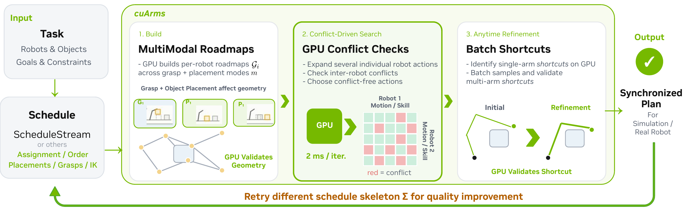

cuArms: GPU-Accelerated Conflict-Based Planning for Multi-Arm Manipulation
Two arms execute a pick, handover, and place sequence to reorient an object.
Abstract
Multi-arm manipulation has the potential to dramatically improve the throughput, efficiency, and dexterity of many manipulation tasks. Recent work coordinates multiple robot arms in a shared workcell by allocating and scheduling tasks for greater parallelism, jointly planning multi-arm motions, or directly learning multi-arm policies. So far, these approaches are either too slow, rely on domain-specific assumptions, or scale poorly with the number of robots and task horizon. Thus, we introduce cuArms, a conflict-based planner co-designed with GPU parallelism that efficiently decomposes the search space using reusable multi-modal roadmaps for individual robots and resolves conflicts and deadlocks through a lazy search. To jointly optimize task assignment, schedules, motions, and manipulation skills, we integrate a high-level scheduler that proposes candidate skeletons for cuArms to ground into coordinated manipulation plans. Experimental results show that our method establishes a new state of the art, with real-time initial solutions and anytime improvements in both motion quality and scheduling, without days of domain-specific training required by learning approaches.
Method

Our contributions are:
- cuArms, a multi-arm manipulation planner that combines per-arm roadmaps, lazy conflict-driven joint search, and anytime trajectory refinement in a disaggregated architecture co-designed for GPU-batched computation.
- Domain-agnostic, multi-arm task and motion planning by integrating cuArms with a high-level scheduler with support for collaborative bimanual manipulation skills, such as handover and carry.
- Simulation and real-robot experiments for multi-arm manipulation, welding, and assembly tasks demonstrating the algorithm’s efficiency, quality, and scalability
Experiment 1 - RoboBallet [1]
Multi-arm welding with 40 targets. cuArms planning time includes scheduling, the initial solution, and refinement. RL rollouts show 20-second excerpts.
[1] M. Lai, K. Go, Z. Li, T. Kröger, S. Schaal, K. Allen, and J. Scholz, “RoboBallet: Planning for Multi-Robot Reaching with Graph Neural Networks and Reinforcement Learning,” Science Robotics, 2025.
Experiment 2 - Tabletop Manipulation
cuArms and ScheduleStream [2] optimize the same schedule skeleton. Planning time includes scheduling and the initial solution, plus refinement for cuArms.
Scaling to more objects
Packing and unpacking with 6 and 8 objects. Total planning time = scheduling + initial solution + refinement, as shown in the supplementary video.
[2] C. Garrett and F. Ramos, “ScheduleStream: Temporal Planning with Samplers for GPU-Accelerated Multi-Arm Task and Motion Planning & Scheduling,” ICRA, 2026.
Additional Results
Long-horizon multi-arm assembly manipulation planning
Multi-Modal Multi-Robot Multi-Goal Path Planning benchmark [3]. Planning time includes refinement. Makespan timers show execution time; speed labels indicate accelerated playback.
[3] V. N. Hartmann, T. Heinle, Y. Huang, and S. Coros, “Sampling-Based Multi-Modal Multi-Robot Multi-Goal Path Planning,” WAFR, 2026.
One-shot multi-arm motion planning
One query per scene of the xECBS benchmark [4]. Planning time includes 1–6 s of refinement, not roadmap construction; cost is the total joint-space distance (rad), as in the benchmark. Played at 0.25×.
[4] Y. Shaoul, I. Mishani, M. Likhachev, and J. Li, “Accelerating Search-Based Planning for Multi-Robot Manipulation by Leveraging Online-Generated Experiences,” ICAPS, 2024.
Using Coding Agents as the Scheduler
In the experiments above, cuArms and each baseline plan the same schedule skeleton. Here we compare two schedulers on top of cuArms: hand-engineered schedulers (greedy Hungarian matching for welding, ScheduleStream for tabletop manipulation) and an off-the-shelf coding agent (Claude Opus or GPT Astra). The agent chooses the task assignment, the skill parameters such as grasps and placements, and the schedule; it calls cuArms through its API and iterates on the results. Each problem is solved from scratch in a fresh sandbox within a 20-minute session, and the final plan is validated independently.
Can Coding Agents Align the Planner Behavior with Human Intent?
Below, we ask the agent to generate a multi-arm manipulation plan according to a natural-language preference provided by a person. Can Astra+cuArms produce manipulation plans that follow human preferences for speed versus smoothness?
Speed only
Scoring: validated success first, then makespan (the time until every robot is done).
The rest of the task description is the same in both: the cell, the goals, and where to grasp each part.
Speed and smoothness
Produce motions a person would be comfortable standing next to:
- smooth and Cartesian-like (the gripper moves in straight, purposeful lines);
- no large or alarming swings;
- no needless joint-space detours;
- never sweep an arm behind its base.
Balance speed and smoothness. Move as fast as the arms can while the motion stays smooth and purposeful. Slow motion is not better motion: a skilled engineer's program does each pick, handover, or placement in a few seconds.